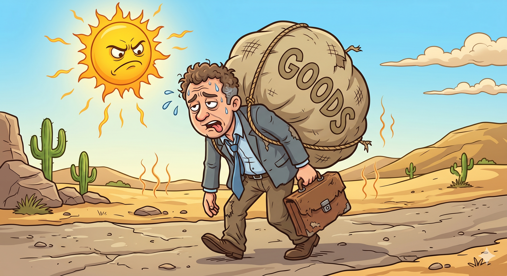
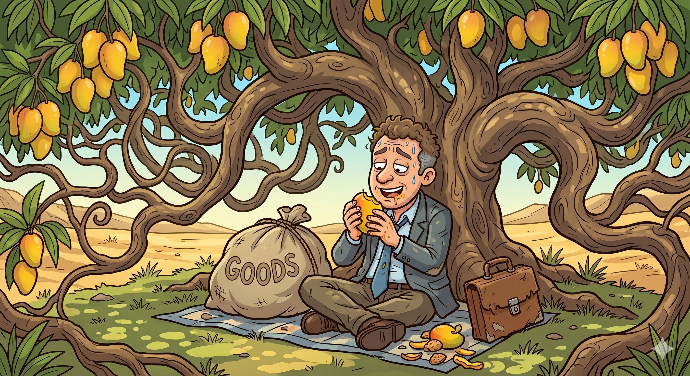
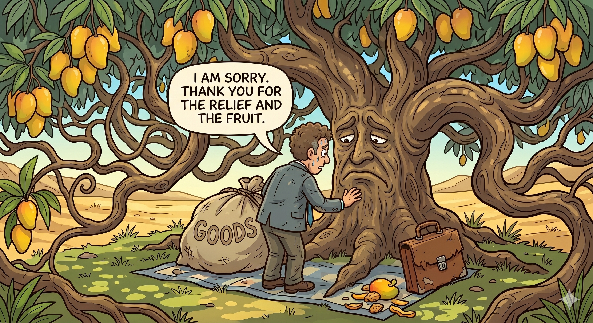

Welcome to our moral values series. Today, we share a touching short story about gratitude for kids. In this story, we learn that being thankful for the help we receive is the most beautiful quality a person can have. Let’s read
'The traveller and the Tree'.
Once, during a very hot summer day, a traveller was walking on a long, dusty road. The sun was burning hot, and there was no water in sight. He was very exhausted and tired.

He saw a large, green tree with wide branches.He quickly ran to the tree and sat in its cool shade."Oh, what a relief!" he sighed.
Seeing the traveller was hungry, the tree dropped two big, sweet mangoes.
Munch, munch, munch! The traveller ate the mangoes and was full and happy.

However, after resting, the traveller looked up and said ungratefully, "This tree is actually quite useless. It has no flowers today, and its wood looks too crooked to make furniture. Why is it even here?"
"Was the traveller being kind or unkind?"
The tree felt very sad. Its leaves shivered. It spoke in a gentle whisper, "Dear traveller, I gave you shade when you were hot. I gave you fruit when you were hungry. But you did not say 'Thank You.' You only looked for my faults."
The traveller realized his mistake and felt ashamed. He realized he was so busy complaining that he forgot to be thankful. He patted the tree’s trunk and said, "I am sorry. Thank you for everything." From that day on, he always looked for the good things in everything he saw.
